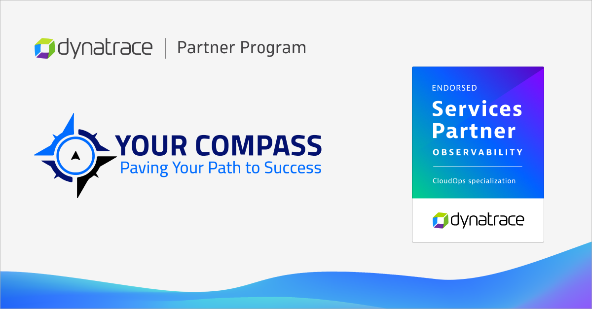

FOR IMMEDIATE RELEASE
[Abu Dhabi, UAE, 13/05/2024] – YourCompass, a Premier Dynatrace Partner in the UAE, announced today that it has achieved the Services Endorsement recognition from Dynatrace, the leader in unified observability and security. This achievement reflects Dynatrace's acknowledgment that YourCompass has demonstrated deep experience and proven customer success in architecting, implementing, upgrading, and managing the Dynatrace Platform to help organizations speed up adoption and digital transformation.
YourCompass is also the first Dynatrace partner to have achieved the Services Endorsement – @CloudOps specialization, at the global level.
"As the need to bring services to end-users increases, our partner teams must be equipped to be able to support their customers efficiently," said Hani Hannoun, Regional Director UAE & Oman, Dynatrace. "Dynatrace's Partner Services Endorsement Program helps organizations achieve this by equipping teams with the knowledge, skills, and experience of deploying and managing the Dynatrace Platform successfully. I'm thrilled that Your Compass has achieved our Services Endorsement badge and is the first EMEA and global partner to achieve the Cloud Ops specialization. This recognizes their commitment to providing the best-in-class experiences to their end-users and enabling digital transformation across the business."
Achieving the CloudOps Automation specialization marks a pivotal moment for Your Compass, highlighting its commitment to elevating customer service with sophisticated technological solutions. This achievement spans key areas such as Deployment Automation, Configuration as Code, and Incident and Problem Automation. By significantly reducing manual tasks and improving response efficiency, Your Compass provides its clients with solutions that boost operational effectiveness and reliability.
Reflecting on this milestone, YourCompass's CEO, Mohamed Haroun, stated, "Securing the CloudOps Automation specialization from Dynatrace is not merely an achievement; it's a testament to our strategic vision in delivering unparalleled value to our customers. This recognition showcases our ability to go beyond basic automation, crafting bespoke, comprehensive automation strategies that address the unique challenges our clients face. Our focus is on transforming digital operations, turning operational hurdles into opportunities for growth and innovation. This strategic edge ensures our clients can leverage their digital transformation journeys for maximum efficiency and impact. We are dedicated to enabling our customers to convert every technological investment into tangible business successes."
As the first EMEA and global partner to achieve the Cloud Ops specialization, Your Compass affirms its leadership in helping clients navigate the complex digital landscape, moving beyond traditional monitoring to automate essential processes that enhance digital performance.
You can learn more about Dynatrace's competency program and YourCompass' partnership with Dynatrace on the YourCompass website.
Dynatrace (NYSE: DT) exists to make the world's software work perfectly. Our unified platform combines broad and deep observability and continuous runtime application security with the most advanced AIOps to provide answers and intelligent automation from data at an enormous scale. This enables innovators to modernize and automate cloud operations, deliver software faster and more securely, and ensure flawless digital experiences. That's why the world's largest organizations trust the Dynatrace® platform to accelerate digital transformation.
Your Compass acts as a pivotal partner in the digital transformation journey of businesses, dedicated to instigating growth and enduring success in the contemporary digital era. It enables its clients to harness the robust capabilities of data and artificial intelligence, modernize core technology, adopt new technological advancements, optimize and automate operations, and nurture digital talent and culture.
Your Compass is a proficient digital solutions provider committed to guiding enterprises through their digital transformation journeys. By leveraging state-of-the-art technologies and building robust partnerships, Your Compass provides solutions that drive operational effectiveness and sustainable business advancement.
← Back to all news